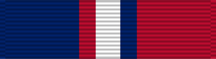

Kosovo Campaign Medal
Service awardKCM
For participation in or direct support of Kosovo operations, 1999 to 2013.
Check your eligibility and build your ribbon rackHow you get it
You earn this by meeting the requirements. No recommendation is needed. If it's missing from your record, current members can have their MPF add it. Veterans can request it from AFPC with a Standard Form 180 and supporting documents.
You qualify if any of these apply
- Served 30 consecutive days in the area of eligibility in direct support of a Kosovo operation (e.g., ALLIED FORCE, NOBLE ANVIL, JOINT GUARDIAN)
- Served 60 nonconsecutive days in direct support of Kosovo operations
Quick facts
- Category
- Campaign and service
- Type
- Service award
- WAPS points
- 0
- Position in the AFPC listing
- 48 of 91 (listed in order of precedence)
Full AFPC fact sheet text
Background
On May 3, 2000, President Clinton approved the establishment of the Kosovo Campaign Medal to recognize the accomplishments of military service members participating or in direct support of Kosovo operations within established areas of eligibility.
Criteria
Service members are authorized the Kosovo Campaign Medal in direct support of the operation for 30 consecutive days in the area of eligibility or for 60 nonconsecutive days in direct support of Kosovo operations:
-ALLIED FORCE (March 24, 1999 – June 10, 1999)
-NOBLE ANVIL (March 24, 1999 – July 20, 1999)
-Kosovo Task Force SABER (March 31, 1999 – July 8, 1999)
-Kosovo Task Force HUNTER (April 1, 1999 – Nov. 1, 1999)
-SUSTAIN HOPE / SHINING HOPE (April 4, 1999 – July 10, 1999)
-ALLIED HARBOUR (April 4, 1999 – Sept. 1, 1999)
-Kosovo Task Force HAWK (April 5, 1999 – June 24, 1999)
-JOINT GUARDIAN (June 11, 1999 – Dec. 31, 2013)
-Kosovo Task Force FALCON (June 11, 1999 – Dec. 31, 2013)
Kosovo Air Campaign (March 24, 1999 – June 10, 1999) Area of Eligibility:
The total land area and air space of Serbia (including Kosovo), Montenegro, Albania, Macedonia, Bosnia, Croatia, Hungary, Romania, Greece, Bulgaria, Italy and Slovenia; and the waters and air space of the Adriatic and Ionian Sea north of the 39th North Latitude.
Kosovo Defense Campaign (11 June 99 - Dec. 31, 2013) Area of eligibility:
The total land area and air space of Serbia (including Kosovo), Montenegro, Albania, Macedonia, and the waters and air space of the Adriatic Seas within 12 nautical miles of the Montenegro, Albania, and Croatia coastlines south of 42 degrees and 52 minutes North Latitude.
Medal description
In the center of a bronze medallion, two mountains with a pass between them rest in front of a fertile valley and atop a wreath composed of two stylized sheaves of wheat. Behind the mountains a rising sun, and superimposed over the sun's rays are the words, in two lines, “KOSOVO CAMPAIGN.”
The stylized wreath of grain reflects the agricultural character of the area and its economy and symbolizes basic human rights while high-lighting the desire of all for peace, safety and prosperity. The rocky terrain, fertile valley, and mountain pass refer to the Dinartic Alps and the campaign's theater of operations. The sunrise denotes the dawning of a new age of unity and hope, the right to forge a future of freedom, progress, and harmony; thus fulfilling the goal of the Alliance. In the center of a bronze medallion, the outline of a map of the Yugoslavian Province of Kosovo. Beneath the map is a three-pointed star. In a circle surrounding the map and star are the words “In Defense Of Humanity.”
The outline of the Province of Kosovo denotes the area of conflict, and is combined with the North Atlantic Treaty Organization (NATO) star, the highlighted cardinal points of the compass, signifying the Alliance participants who stabilized the region and provided massive relief. The inscription reinforces the objective of the military action conducted during the campaign.
Ribbon description
The ribbon consists of red, white, and blue pinstripes of equal width in the center; the ribbon to the wearer's right is dark blue and abuts to the red pinstripe; the ribbon to the wearer's left is red, and abuts to the blue pinstripe. The red, white, and blue were suggested by the NATO Alliance's colors, and the red, white, and blue pinstripes represent the colors of the United States flag.
Authorized devices
A bronze service star is authorized for qualified participation during each of the above mentioned campaigns. An individual who participated in one campaign would wear the medal and/or ribbon with one bronze service star. Meeting the qualifications in each of the two campaigns would warrant the KCM and two bronze service stars. However, if an individual began in one campaign and carried over into the second campaign, they would only qualify for one bronze service star.
Source: Kosovo Campaign Medal fact sheet, Air Force's Personnel Center